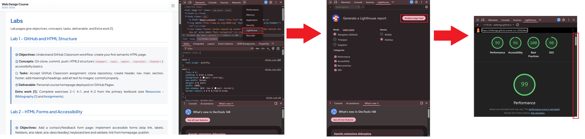
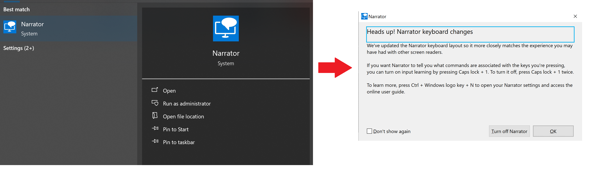

Lab 11 - Accessibility audit using Lighthouse and manual inspection
Duration: . In this lab we learn what Lighthouse is, how to inspect a page manually, and how to use Windows Narrator to check accessibility.
Below you will find a theory section about Lighthouse and Narrator that you should read carefully. After the theory, you will prepare a short report by inspecting a given page and writing down what you observe.
On this page: Overview · Theory · Lab Setup · Tasks · References.
Overview
Objectives: Learn what Lighthouse does, inspect a page for accessibility issues, and compare automated results with a screen reader experience.
Concepts: Lighthouse auditing, manual inspection, WCAG accessibility checks, keyboard navigation, and Narrator screen reader testing.
Tasks: Inspect a page visually and in the DOM, run Lighthouse, use Narrator, and write down the main accessibility findings.
Deliverable: A plain text report file describing the accessibility issues discovered during the tasks.
Theory
1. What is Lighthouse?
Lighthouse is an open-source automated auditor developed by Google that runs in the Chromium engine. It analyzes a web page and executes a standard set of tests for accessibility, performance, best practices, and SEO. For accessibility, Lighthouse inspects both the HTML DOM and the browser-generated accessibility tree.
Why do we use Lighthouse?
- It generates a quantitative accessibility score.
- It detects automated issues such as:
- images missing
alttext, - interactive controls without labels,
- insufficient color contrast,
- inconsistent focus order, and
- elements hidden incorrectly from the accessibility tree.
- images missing
- It is useful for finding low-hanging fruits before manual testing.
- It allows you to compare page versions and track improvements over time.
How do I activate Lighthouse?
- Open the web page in Chrome (or another Chromium-based browser such as Edge or Brave).
- Press F12 or Ctrl+Shift+I to open DevTools, or use Inspect.
- Select the Lighthouse tab.
- Choose only Accessibility for a focused audit, then click Generate report.
- Lighthouse will rebuild the page in a test environment and report the identified issues.
What can we observe in the report?
The report includes technical details in the following areas:
- Score: the overall accessibility score.
- Audit failures: checks that did not pass.
- Warnings: semi-critical issues that may affect users.
- Element: the problematic HTML node and a code snippet.
- Recommendations: which attribute or structure needs to be fixed.
Examples of technical checks:
image-alt– an image must have analtattribute or be marked as decorative.label– each input must be associated with a<label>or anaria-label.color-contrast– minimum ratio 4.5:1 for normal text and 3:1 for large text.tabindex– interactive elements must be able to receive focus in the correct order.aria-roles– roles must be correct and must not override native elements incorrectly.

2. What is Narrator?
Microsoft Narrator is the native screen reader in Windows. It reads the accessibility tree and provides spoken feedback for each interactive and non-interactive element. It is used for manual testing of the experience for users with visual impairments and for checking reading order.
Why do we use Narrator?
- It verifies that accessible names match the visible content.
- It exposes reading-order issues that are not always visible in automated tests.
- It allows precise evaluation of how headings, links, buttons, form controls, and state changes are announced.
How do I activate it?
- Search for the Narrator application in the Windows Start menu and start it.
- Open the page in your browser and navigate using Tab and Shift + Tab.
- Use Caps Lock + Right Arrow / Caps Lock + Left Arrow to move the reading cursor and Caps Lock + Space to activate a control.
- Listen to how elements are announced and note any inconsistency or mislabeling.
What can we observe with Narrator?
- Whether elements are announced with the correct type: button, link, heading, textbox.
- Whether the spoken order matches the visual order of the page.
- Whether ARIA labels and accessible names are descriptive and not generic.
- Whether decorative images are skipped or marked correctly with
alt=""/aria-hidden="true". - Whether form controls announce their state: required, checked, expanded, collapsed, etc.
- Whether there are keyboard navigation traps or elements that cannot receive focus.

You can also review the following accessibility resources:
Lab setup
For this lab, you only need to accept the Lab 11 assignment in GitHub Classroom. Once the assignment is accepted, you can continue with the accessibility audit tasks.
Tasks
Complete the following steps and summarize your findings in a file named raport.txt.
- Open the exercise page in a new tab by clicking Exercise page.
- Open DevTools and run a Lighthouse accessibility audit for the page.
- Write the Lighthouse results in
raport.txt, including the issues found and the improvements needed to increase the accessibility score. - Use Windows Narrator to navigate the page and evaluate how the content is announced.
- Add your Narrator observations to
raport.txt, describing the experience and any obstacles you encountered.
Make sure your report includes both the automated Lighthouse findings and your manual Narrator evaluation.
Push your work
When you are done, push your raport.txt file to GitHub. This will be the deliverable for this lab.
What to include in raport.txt
- Lighthouse findings and the accessibility checks that failed or warned.
- Suggested improvements for images, labels, contrast, focus order, link text, and roles.
- Your experience using Narrator, including how it announces page structure and interactive elements.
- Any usability obstacles you noticed while navigating with Narrator.
Extra work
Extra work [1]: Complete exercises 23-1, 23-2 and 23-3 from the primary textbook (see Resources - Bibliography [1] and Assignments).